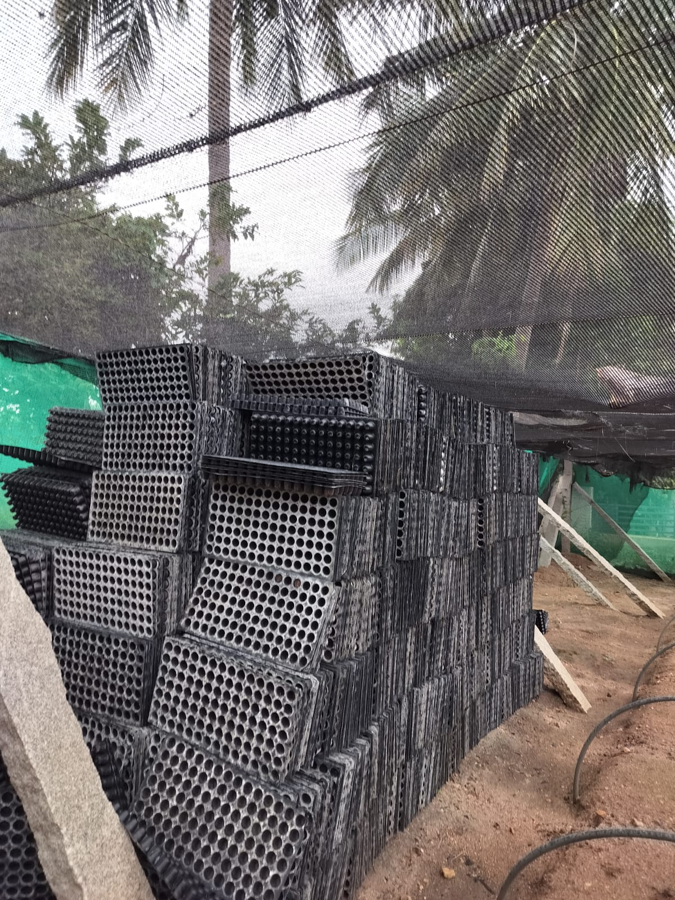

Widow Support


In a compassionate effort to uplift widows and destitute women facing vulnerable circumstances, Rural Development Trust (RDT) extends vital support to ensure their well-being and resilience. Recognizing the precarious situations these women often find themselves in, RDT initiates comprehensive measures to provide not just nutritional support but also avenues for financial stability, education, and income generation. This multifaceted approach aims to fortify the health of these women, safeguard them from falling prey to illnesses, and empower them to build sustainable futures for themselves and their families.
The primary focus of RDT's intervention lies in addressing the needs of single mothers who find themselves in dire financial straits following the death of their husbands. These women, already grappling with the emotional toll of loss, are further burdened by economic challenges. RDT steps in to offer not just immediate relief but a holistic support system designed to nurture their physical and financial well-being.
Financial assistance, a pivotal component of this initiative, takes the form of supplying essential food grains to the families. This targeted aid ensures that nutritional needs are met, laying a foundation for the overall health and resilience of these vulnerable households. By addressing the basic necessities of sustenance, RDT seeks to alleviate the immediate hardships faced by widows and destitute women, creating a pathway for them to regain stability. Beyond food support, RDT recognizes the critical role education plays in breaking the cycle of poverty. For widows with children, the organization extends support by providing education to the offspring. This dual-focus approach not only secures the nutritional needs of the family but also invests in the educational development of the next generation, empowering them with the tools for a brighter future.
Moreover, RDT goes a step further by engaging these families in income-generating activities. Recognizing the importance of financial independence, the organization facilitates opportunities for single mothers and their children to participate in sustainable business ventures. This comprehensive strategy aims not only to provide immediate relief but to create a lasting impact by fostering economic self-sufficiency.
The engagement in income-generating activities is twofold – it empowers these women to contribute actively to their households while also instilling a sense of purpose and skill development. Whether it be through small-scale businesses, vocational training, or community initiatives, RDT ensures that widows and destitute women are not merely recipients of aid but active participants in shaping their destinies.
Success Story:
In the quiet village of Atmakuru, a widow named Jyothi found herself navigating life's challenges with resilience and determination, thanks to the unwavering support of Rural Development Trust (RDT). Following the tragic loss of her husband, Jyothi and her two children became recipients of crucial assistance from RDT, which became a cornerstone for their survival and eventual independence.
For a span of five years, RDT provided essential sustenance in the form of food grains, alleviating the immediate burden on Jyothi and her family. This support ensured that their nutritional needs were met, offering a lifeline during a challenging period of transition. Recognizing the significance of education in shaping the future, RDT extended financial assistance to Jyothi's two children. This investment in their education not only opened doors to knowledge and skills but also symbolized a commitment to breaking the cycle of intergenerational poverty.
In a strategic move to empower Jyothi towards economic self-sufficiency, RDT entrusted her with two nurseries in the village. These nurseries became the canvas for Jyothi's newfound independence, where she skillfully cultivated crops like tomatoes, brinjals, and mirchi in each season. The nurseries served as more than just plots of land; they became symbols of empowerment and resilience, providing Jyothi with a means to sustain her household. With each planting season, Jyothi diligently tended to her nurseries, nurturing the growth of vegetables that would eventually find their way to the market. The fruits of her labor were not just vegetables but a testament to her journey towards self-reliance and financial independence. RDT's provision of the nurseries became a transformative step, enabling Jyothi to transition from dependence to entrepreneurship.
Upon the completion of each planting cycle, the harvested vegetables were sold in the market at a fair price. This not only ensured a fair return on Jyothi's hard work but also contributed to the generation of income for her household. The market sales provided a sustainable source of livelihood, empowering Jyothi to meet the needs of her family with dignity and autonomy.
In the heart of Atmakuru, Jyothi's story became a beacon of empowerment, showcasing the impact of strategic support from RDT. Through the provision of food grains, financial aid, and the opportunity to cultivate nurseries, RDT catalyzed a transformation in Jyothi's life, from a widow dependent on assistance to a resilient entrepreneur steering her own destiny. In empowering individuals like Jyothi, RDT's holistic approach extends beyond immediate relief to create lasting pathways for self-sufficiency and dignity.
